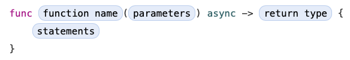
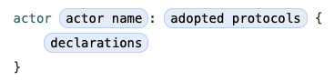

宣言(Declarations)
最終更新日: 2021/7/2
原文: https://docs.swift.org/swift-book/ReferenceManual/Declarations.html
宣言はプログラムに新しい名前または構文を導入します。例えば、関数とメソッド、変数と定数の導入や、列挙型、構造体、クラス、およびプロトコルの型の定義のために宣言を使用します。既存の名前付き型の動作を拡張したり、他の場所で宣言されているプログラムにシンボルをインポートするために宣言を使用できます。
Swift では、ほとんどの宣言は、宣言されているのと同時に実装または初期化されているという点で定義と同等です。一方で、プロトコルはメンバを実装していないため、ほとんどのプロトコルメンバは宣言だけです。便宜上、この区別は重要ではないため、宣言という用語は宣言と定義の両方をカバーします。
GRAMMAR OF A DECLARATION
declaration → import-declaration
declaration → constant-declaration
declaration → variable-declaration
declaration → typealias-declaration
declaration → function-declaration
declaration → enum-declaration
declaration → struct-declaration
declaration → class-declaration
declaration → protocol-declaration
declaration → initializer-declaration
declaration → deinitializer-declaration
declaration → extension-declaration
declaration → subscript-declaration
declaration → operator-declaration
declaration → precedence-group-declaration
declarations → declaration declarationsopt
トップレベルコード(Top-Level Code)
Swift ソースファイルのトップレベルコードは、0 個以上の文、宣言、式で構成されています。デフォルトでは、ソースファイルのトップレベルで宣言されている変数、定数、およびその他の名前付き宣言は、同じモジュールの全てのソースファイル内のコードからアクセスできます。Access Control Levels(アクセス制御レベル)で説明されているように、宣言をアクセスレベル修飾子でマークすることで、このデフォルトの動作をオーバーライドできます。
トップレベルコードには 2 種類あります: トップレベル宣言と実行可能トップレベルコードです。トップレベル宣言は宣言のみで構成され、全ての Swift ソースファイルで許可されています。実行可能トップレベルコードには、宣言だけでなく、文と式が含まれており、プログラムのトップレベルのエントリポイントとしてのみ使用できます。
コードがファイルやモジュールに構成されている方法に関係なく、実行可能にするためにコンパイルした Swift のコードは、トップレベルのエントリポイントをマークする次の方法の内の 1 つを含めることができます: main 属性、NSApplicationMain 属性、UIApplicationMain 属性、main.swift ファイル、またはトップレベルの実行可能コードを含むファイルです。
GRAMMAR OF A TOP-LEVEL DECLARATION
top-level-declaration → statementsopt
コードブロック(Code Blocks)
コードブロックは、文をグループ化するための様々な宣言および制御構造によって使用されます。形式は次のとおりです:

コードブロック内の statements には、宣言、式、およびその他の文が含まれており、ソースコード内の出現順に実行されます。
GRAMMAR OF A CODE BLOCK
code-block →{statementsopt}
インポート宣言(Import Declaration)
インポート宣言を使用すると、現在のファイルの外部で宣言されているシンボルにアクセスできます。基本形式はモジュール全体をインポートします。import キーワードとそれに続くモジュール名で構成されます:

シンボルのインポートをより細かく制限するために、インポート宣言には、モジュールまたはサブモジュール内で特定のサブモジュールまたは宣言を指定できます。この詳細な形式を使用する場合は、(それを宣言するモジュールではなく)インポートされたシンボルだけが現在のスコープで利用可能になります。

GRAMMAR OF AN IMPORT DECLARATION
import-declaration → attributesoptimportimport-kindopt import-path
import-kind →typealias|struct|class|enum|protocol|let|var|func
import-path → import-path-identifier | import-path-identifier.import-path
import-path-identifier → identifier | operator
定数宣言(Constant Declaration)
定数宣言では、プログラムに名前付きの定数値を導入します。定数宣言は let キーワードを使用して宣言され、形式は次のとおりです。

定数宣言は、constant name と値を初期化する expression の間の不変の繋がりを定義します。定数の値は設定されたら変更できません。つまり、定数がクラスオブジェクトで初期化されている場合、オブジェクト自体を変更できますが、定数名とそれが参照するオブジェクトの間の繋がりは変更できません。
定数がグローバルスコープで宣言されている場合は、値を使って初期化する必要があります。関数またはメソッドのコンテキストに定数宣言があると、その値が初めて読み込まれる前に値が設定されることが確実な限り、後で初期化できます。コンパイラが定数の値が読み取られないことをわかっている場合、定数に値を絶対に設定する必要はありません。クラスまたは構造体宣言のコンテキストでの定数宣言は、定数プロパティと見なされます。定数宣言は計算プロパティではないため、get または set を持ちません。
定数宣言の constant name がタプルの場合、タプル内の各項目の名前は、値を初期化する expression を通して対応する値にバインドされます。
let (firstNumber, secondNumber) = (10, 42)
この例では、firstNumber は値 10 の名前付き定数で、secondNumber は 42 の名前付き定数です。両方の定数は独立して使用できます。
print("The first number is \(firstNumber).")
// The first number is 10.
print("The second number is \(secondNumber).")
// The second number is 42.
型注釈(:type)は、Type Inference(型推論)で説明されているように、constant name の型を推論できる場合は、省略可能です。
定数型プロパティを宣言するには、宣言に static 修飾子をマークします。クラスの定数型プロパティは常に暗黙的に final です。サブクラスによるオーバーライドを許可または禁止するために、class または final 修飾子をマークすることはできません。型プロパティは、Type Properties(型プロパティ)で説明されています。
定数の詳細およびそれらを使用するときのガイダンスについては、Constants and Variables(定数と変数)とStored Properties(格納プロパティ)を参照ください。
GRAMMAR OF A CONSTANT DECLARATION
constant-declaration → attributesopt declaration-modifiersoptletpattern-initializer-list
pattern-initializer-list → pattern-initializer | pattern-initializer,pattern-initializer-list
pattern-initializer → pattern initializeropt
initializer →=expression
変数宣言(Variable Declaration)
変数宣言では、プログラムに名前付きの変数値を導入し、var キーワードを使用して宣言されます。
変数宣言には、格納/計算変数や格納/計算プロパティ、格納変数オブザーバやプロパティオブザーバ、および静的変数プロパティなど、様々な種類の名前付きで可変な値を宣言する形式があります。適切な形式は、変数が宣言されているスコープと宣言する変数の種類によって異なります。
NOTE
Protocol Property Declaration(プロトコルプロパティ宣言)で説明されているように、プロトコル宣言のコンテキストでプロパティを宣言することもできます。
Overriding(オーバーライド)で説明されているように、サブクラスのプロパティ宣言に override 修飾子をマークすることで、サブクラス内でプロパティをオーバーライドできます。
格納変数、格納可変プロパティ(Stored Variables and Stored Variable Properties)
次の形式は、格納変数や格納可変プロパティを宣言します。

この形式の変数宣言は、グローバルスコープ、関数のローカルスコープ、またはクラスまたは構造体宣言のコンテキストで定義できます。この形式の変数宣言が、グローバルスコープまたは関数のローカルスコープで宣言されている場合は、格納変数と呼ばれます。クラスまたは構造体宣言のコンテキストで宣言されている場合は、格納可変プロパティと呼ばれます。
値を初期化する expression はプロトコル宣言に定義できませんが、他の全てのコンテキストで、値を初期化する expression は任意で可能す。つまり、値を初期化する expression が存在しない場合、変数宣言に明示的な型注釈(: type)を含める必要があります。
定数宣言と同様に、variable name がタプルの場合、タプル内の各項目の名前は、値を初期化する expression の対応する値にバインドされます。
それらの名前が示唆するように、格納変数または格納可変プロパティの値がメモリに格納されます。
計算変数、計算変数プロパティ(Computed Variables and Computed Properties)
次の形式は、計算変数または計算プロパティを宣言します。

この形式の変数宣言は、グローバルスコープ、関数のローカルスコープ、またはクラス、構造体、列挙型、または extension のコンテキストで定義できます。この形式の変数宣言がグローバルスコープまたは関数のローカルスコープで宣言されている場合は、計算変数と呼ばれます。クラス、構造体、または extension のコンテキストで宣言されている場合は、それは計算プロパティと呼ばれます。
get は値を読み取るために使用され、set は値を書き込むために使用されます。set 句は省略可能で、get のみが必要な場合は、Read-Only Computed Properties(読み取り専用計算プロパティ)で説明されているように、両方の句を省略し、シンプルに要求された値を直接返すことができます。しかし、set 句を指定した場合は、get 句も提供する必要があります。
setter name とそれを囲む括弧は省略可能です。setter name を指定した場合は、set のパラメータ名として使用されます。setter name を指定しない場合は、Shorthand Setter Declaration(省略 set プロパティ宣言)で説明されているように、set へのデフォルトのパラメータ名は newValue です。
格納変数や格納可変プロパティとは異なり、計算変数または計算プロパティの値はメモリに格納されません。
詳細や計算プロパティの例は、Computed Properties(計算プロパティ)を参照ください。
格納変数オブザーバとプロパティオブザーバ(Stored Variable Observers and Property Observers)
格納変数またはプロパティを willSet や didSet オブザーバと一緒に宣言することもできます。オブザーバで宣言された格納変数またはプロパティの形式は次のとおりです:

この形式の変数宣言は、グローバルスコープ、関数のローカルスコープ、またはクラスまたは構造体宣言のコンテキストで定義できます。この形式の変数宣言がグローバルスコープまたは関数のローカルスコープで宣言されている場合、オブザーバは格納変数オブザーバと呼ばれます。クラスまたは構造体宣言のコンテキストで宣言されている場合、オブザーバはプロパティオブザーバと呼ばれます。
任意の格納プロパティにプロパティオブザーバを追加できます。Overriding Property Observers(プロパティオブザーバのオーバーライド)で説明されているように、サブクラス内でプロパティをオーバーライドすることで、継承したプロパティ(格納または計算プロパティ)にプロパティオブサーバを追加することもできます。
値を初期化する expression は、クラスまたは構造体宣言のコンテキストでは省略可能ですが、他の場所では必須です。型注釈は、型が値を初期化する expression から推論できる場合は省略可能です。この式は、プロパティの値が初めて読まれるときに評価されます。プロパティの値を読み込む前にプロパティの初期値を上書きする場合、この式はプロパティに初めて書き込まれる前に評価されます。
willSet および didSet オブザーバは、変数またはプロパティの値が設定されるときに、その値を監視(そして適切に対応する)方法を提供します。変数またはプロパティが最初に初期化される場合は、オブザーバは呼び出されません。代わりに、それらは初期化以外で値が設定されている場合にのみ呼び出されます。
willSet オブザーバは、変数またはプロパティの値が設定される直前に呼び出されます。新しい値が定数として willSet オブザーバに渡されるため、 willSet 句の実装では変更できません。didSet オブザーバは、新しい値が設定された直後に呼び出されます。willSet オブザーバとは対照的に、それにアクセスする必要がある場合は、変数またはプロパティの古い値が didSet オブザーバーに渡されます。つまり、自身の didSet オブザーバ句内で変数またはプロパティに値を割り当てた場合、直前で設定して willSet オブザーバに渡された値を置き換えます。
willSet および didSet 句内の setter name とそれを囲む括弧は省略可能です。setter name を指定した場合は、willSet と didSet オブザーバのパラメータ名として使用されます。setter name を指定しない場合は、willSet オブザーバのデフォルトのパラメータ名が newValue で、didSet オブザーバのデフォルトのパラメータ名は oldValue です。
didSet 句は、willSet 句を指定した場合は省略可能です。同様に、didSet 句を指定するときは、willSet 句は省略可能です。
didSet オブザーバの本文が古い値を参照する場合、get はオブザーバの前に呼び出され、古い値を使用できます。それ以外の場合は、スーパークラスの get を呼び出さずに新しい値が格納されます。下記の例は、スーパークラスで定義され、オブザーバを追加するためにそのサブクラスでオーバーライドされた計算プロパティを示しています:
class Superclass {
private var xValue = 12
var x: Int {
get { print("Getter was called"); return xValue }
set { print("Setter was called"); xValue = newValue }
}
}
// このサブクラスは オブザーバ の oldValue を参照していません
// SuperClass の get は、値を出力するために一度だけ呼び出されます。
class New: Superclass {
override var x: Int {
didSet { print("New value \(x)") }
}
}
let new = New()
new.x = 100
// Setter was called
// Getter was called
// New value 100
// このサブクラスはそのオブザーバの oldValue を参照しているので、スーパークラスの
// get はセッターの前に一度呼び出され、また値を出力します
class NewAndOld: Superclass {
override var x: Int {
didSet { print("Old value \(oldValue) - new value \(x)") }
}
}
let newAndOld = NewAndOld()
newAndOld.x = 200
// Getter was called
// Setter was called
// Getter was called
// Old value 12 - new value 200
より詳細な情報やプロパティオブザーバの使用方法の例は、Property Observers(プロパティオブザーバ)を参照ください。
型変数プロパティ(Type Variable Properties)
型変数プロパティを宣言するには、宣言を static 修飾子でマークします。サブクラスがスーパークラスの実装をオーバーライドできるようにするには、代わりに class 修飾子を使用して型計算プロパティを宣言することができます。型プロパティは、Type Properties(型プロパティ)で説明されています。
GRAMMAR OF A VARIABLE DECLARATION
variable-declaration → variable-declaration-head pattern-initializer-list
variable-declaration → variable-declaration-head variable-name type-annotation code-block
variable-declaration → variable-declaration-head variable-name type-annotation getter-setter-block
variable-declaration → variable-declaration-head variable-name type-annotation getter-setter-keyword-block
variable-declaration → variable-declaration-head variable-name initializer willSet-didSet-block
variable-declaration → variable-declaration-head variable-name type-annotation initializeropt willSet-didSet-block
variable-declaration-head → attributesopt declaration-modifiersoptvar
variable-name → identifier
getter-setter-block → code-block
getter-setter-block →{getter-clause setter-clauseopt}
getter-setter-block →{setter-clause getter-clause}
getter-clause → attributesopt mutation-modifieroptgetcode-block
setter-clause → attributesopt mutation-modifieroptsetsetter-nameopt code-block
setter-name →(identifier)
getter-setter-keyword-block →{getter-keyword-clause setter-keyword-clauseopt}
getter-setter-keyword-block →{setter-keyword-clause getter-keyword-clause}
getter-keyword-clause → attributesopt mutation-modifieroptget
setter-keyword-clause → attributesopt mutation-modifieroptset
willSet-didSet-block →{willSet-clause didSet-clauseopt}
willSet-didSet-block →{didSet-clause willSet-clauseopt}
willSet-clause → attributesoptwillSetsetter-nameopt code-block
didSet-clause → attributesoptdidSetsetter-nameopt code-block
タイプエイリアス宣言(Type Alias Declaration)
タイプエイリアス宣言では、既存の型に別名を導入します。タイプエイリアス宣言は、typealias キーワードを使用して宣言され、形式は次のとおりです:

タイプエイリアスが宣言された後、プログラム内の既存の型の代わりに注釈された name を使用できます。existing type は、名前付き型または複合型にすることができます。タイプエイリアスは新しい型を作成しません。それらは単に名前が既存の型を参照することを可能にします。
タイプエイリアス宣言は、ジェネリックパラメータを使用して既存のジェネリック型に名前を付けることができます。そのタイプエイリアスは、既存の型のジェネリックパラメータの一部または全部を使って具象型を提供できます。例えば:
typealias StringDictionary<Value> = Dictionary<String, Value>
// 以下の辞書は同じ型を持っています
var dictionary1: StringDictionary<Int> = [:]
var dictionary2: Dictionary<String, Int> = [:]
タイプエイリアスがジェネリックパラメータで宣言されると、それらのパラメータの制約は既存の型のジェネリックパラメータの制約と正確に一致する必要があります。例えば:
typealias DictionaryOfInts<Key: Hashable> = Dictionary<Key, Int>
タイプエイリアスと既存の型は互換的に使用される可能性があるため、タイプエイリアスは追加のジェネリック制約を導入できません。
タイプエイリアスは、宣言から全てのジェネリックパラメータを省略することで、既存の型のジェネリックパラメータを流用できます。例えば、ここで宣言されている Diccionario というタイプエイリアスは、Dictionary と同じジェネリックパラメータと制約を持ちます。
typealias Diccionario = Dictionary
プロトコル宣言の内部では、タイプエイリアスは頻繁に使用される型に短くて便利な名前を付けることができます。例えば:
protocol Sequence {
associatedtype Iterator: IteratorProtocol
typealias Element = Iterator.Element
}
func sum<T: Sequence>(_ sequence: T) -> Int where T.Element == Int {
// ...
}
このタイプエイリアスがないと、sum 関数は関連型を T.Element ではなく T.Iterator.Element として参照する必要があります。
Protocol Associated Type Declaration(プロトコル関連型宣言)も参照ください。
GRAMMAR OF A TYPE ALIAS DECLARATION
typealias-declaration → attributesopt access-level-modifieropttypealiastypealias-name generic-parameter-clauseopt typealias-assignment
typealias-name → identifier
typealias-assignment →=type
関数宣言(Function Declaration)
関数宣言では、プログラムに関数またはメソッドを導入します。クラス、構造体、列挙型、またはプロトコルのコンテキストで宣言されている関数はメソッドと呼ばれます。関数宣言は func キーワードを使用して宣言され、形式は次のとおりです:

関数の戻り値の型が Void の場合は、次のように戻り値の型を省略できます:

各パラメータには型を含める必要があります。推論することはできません。パラメータ型の前に inout を書くと、その関数の範囲内でパラメータを変更できます。in-out パラメータについては、下記のIn-Out Parameters(In-Out パラメータ)で詳細に説明されています。
statements が単一式のみを含む関数宣言は、その式の値を返すことが明らかです。この暗黙的なリターン構文は、式の型と関数の戻り値の型が Void やケースを持たない Never のような列挙型ではない場合にのみ使用できます。
関数は、戻り値の型としてタプル型を使用して複数の値を返すことができます。
関数定義は他の関数宣言の内部に現れることがあります。この種の関数はネスト関数と呼ばれます。
ネスト関数は、in-out パラメータのように決してエスケープしないことが確実な値をキャプチャしている場合、または非エスケープ関数の引数として渡される場合は、非エスケープです。それ以外の場合、ネスト関数はエスケープ関数です。
ネスト関数については、を参照ください。
Parameter Names(パラメータ名)
関数パラメータは、各パラメータが複数の形式のうちの 1 つを持つカンマ区切りのリストです。関数呼び出し内の引数の順序は、関数の宣言内のパラメータの順序と一致する必要があります。パラメータリスト内の最もシンプルなエントリの形式は次のとおりです:

パラメータには、関数本文内で使用されている名前、および関数またはメソッドを呼び出すときに使用される引数ラベルがあります。デフォルトでは、パラメータ名は引数ラベルとしても使用されます。例えば:
func f(x: Int, y: Int) -> Int { return x + y }
f(x: 1, y: 2) // x と y の両方にラベルがあります
次のいずれかの形式で、引数ラベルのデフォルトの動作を上書きできます。

パラメータ名の前の名前は、パラメータの明示的な引数ラベルで、パラメータ名とは異なる可能性があります。関数呼び出しまたはメソッド呼び出し時は、対応する引数に指定された引数ラベルを使用する必要があります。
パラメータ名の前にアンダースコア(_)を付けると、引数ラベルが省略されます。関数呼び出しまたはメソッド呼び出し時は、対応する引数に、ラベルを付けてはなりません。
func repeatGreeting(_ greeting: String, count n: Int) { /* n 回あいさつ */ }
repeatGreeting("Hello, world!", count: 2) // count は ラベルあち, greeting は ラベルなし
In-Out パラメータ(In-Out Parameters)
in-out パラメータは次のように渡されます:
- 関数が呼び出されると、引数の値がコピーされます
- 関数の本文では、コピーが変更されます
- 関数から戻ると、コピーの値が元の引数に割り当てられます
この動作はコピーインコピーアウトまたは値渡しと呼ばれます。例えば、計算プロパティまたはオブザーバを持つプロパティが in-out パラメータとして渡されると、その get は関数呼び出しの一部として呼び出され、その set は関数リターンの一部として呼び出されます。
最適化として、引数がメモリ内の物理アドレスに格納されている値の場合、関数本文の内側と外側の両方で同じメモリアドレスが使用されます。最適化された動作は、参照渡しと呼ばれます。これはコピーのオーバーヘッドを削減しながら、コピーインコピーアウトモデルの全ての要件を満たします。参照渡しに依存せず、コピーインコピーアウトで与えられたモデルを使用してコードを書きましょう。そうすれば、最適化の有無にかかわらず正しく動作します。
関数内で、元の値が現在のスコープで使用可能でも、in-out 引数として渡された値にアクセスしないでください。元の値へのアクセスは、Swift のメモリ排他性に対する保証に違反した値への同時アクセスです。同じ理由で、同じ値を複数の in-out パラメータに渡すことはできません。
メモリの安全性とメモリの排他性の詳細については、Memory Safety(メモリ安全性)を参照ください。
in-out パラメータをキャプチャするクロージャまたはネスト関数は、非エスケープでなければなりません。in-out パラメータを変えることなくキャプチャする必要がある場合は、キャプチャリストを使用して、パラメータを不変なものとして明示的にキャプチャします。
func someFunction(a: inout Int) -> () -> Int {
return { [a] in return a + 1 }
}
in-out パラメータをキャプチャして変更する必要がある場合は、マルチスレッドコードで関数が返される前に全ての変更が終了することを保証するように、明示的にローカルコピーを使用してください。
func multithreadedFunction(queue: DispatchQueue, x: inout Int) {
// 手動でローカルコピーを作成します
var localX = x
defer { x = localX }
// localXを非同期的に操作してから、戻る前に待機します
queue.async { someMutatingOperation(&localX) }
queue.sync {}
}
より多くの議論と in-out パラメータの例については、In-Out Parameters(In-Out パラメータ)を参照ください。
特殊な種類のパラメータ(Special Kinds of Parameters)
パラメータを無視したり、1 つのパラメータに複数の値を受け取ったり、デフォルト値を提供できます。形式は次のとおりです:

アンダースコア(_)パラメータは明示的に無視され、関数の本文内でアクセスすることはできません。
型名の直後に 3 つのドット(...)を続くパラメータは、可変長パラメータとして解釈されます。可変長パラメータのすぐ後に続くパラメータには、引数ラベルが必要です。関数は複数の可変長パラメータを持つことができます。可変長パラメータは、型名の要素の配列として扱われます。例えば、可変長パラメータ Int... は [Int] として扱われます。可変長パラメータを使用する例については、Variadic Parameters(可変長パラメータ)を参照ください。
等式(=)パラメータと型の後に式を伴うパラメータは、指定された式をデフォルト値として解釈します。指定された式は、関数が呼び出された時に評価されます。関数呼び出し時にパラメータを省略すると、デフォルト値が代わりに使用されます。
func f(x: Int = 42) -> Int { return x }
f() // 有効。デフォルト値を使用します
f(x: 7) // 有効。提供された値を使用します
f(7) // 無効。引数ラベルがありません
特殊な種類のメソッド(Special Kinds of Methods)
self を変更する列挙型または構造体のメソッドは、mutating 修飾子でマークされていなければなりません。
スーパークラスメソッドをオーバーライドするメソッドは、override 修飾子でマークされている必要があります。これは、override 修飾子なしでメソッドをオーバーライド、逆にスーパークラスメソッドをオーバーライドしないメソッドで override 修飾子を使用するとコンパイルエラーになります。
型のインスタンスではなく型自体に紐づくメソッドは、列挙型および構造体の static 修飾子、またはクラスの static または class 修飾子のいずれかでマークされている必要があります。class 修飾子でマークされたクラス型メソッドは、サブクラスでオーバーライドできます。class final または static でマークされたクラス型メソッドはオーバーライドできません。
特別な名前のメソッド(Methods with Special Names)
いくつかの特別な名前のメソッドは、関数呼び出しの糖衣構文(シンタックスシュガー)を使用できます。ある型がこれらのメソッドの内の 1 つを定義している場合、そのインスタンスを関数呼び出し構文で使用できます。それは、そのインスタンス上の特別な名前のメソッドの呼び出しだと解釈されます。
クラス、構造体、または列挙型は、dynamicCallableで説明されているように、dynamicallyCall(withArguments:) メソッドまたは dynamicallyCall(withKeywordArguments:) メソッドを定義することによって、または下記で説明されているように、call-as-function メソッドを定義することによって、関数呼び出し構文をサポートできます。型が call-as-function メソッドと dynamicCallable 属性のメソッドの両方を定義している場合、コンパイラはどちらの方法も使用できる状況では、call-as-function メソッドを選びます。
call-as-function メソッドの名前は、callAsFunction()、または callAsFunction( で始まり、ラベル有りまたはなしの引数を付けた別の名前(例えば、callAsFunction(_:_:)、callAsFunction(something:) も有効です。
次の関数呼び出しは同等です:
struct CallableStruct {
var value: Int
func callAsFunction(_ number: Int, scale: Int) {
print(scale * (number + value))
}
}
let callable = CallableStruct(value: 100)
callable(4, scale: 2)
callable.callAsFunction(4, scale: 2)
// 両方の関数は印刷 208 を出力します
call-as-function メソッドと dynamicCallable 属性のメソッドは、型システムにどのくらいの情報を与え、実行時にどのくらい動的な動作が可能かの間で異なるトレードオフがあります。call-as-function メソッドを宣言すると、引数の数、および各引数の型とラベルを指定します。dynamicCallable 属性のメソッドは、引数の配列を保持するために使用される型のみを指定できます。
call-as-function メソッド、または dynamicCallable 属性のメソッドを定義することは、任意のコンテキスト内で関数呼び出し以外の関数のようにその型のインスタンスを使用してはいけません。例えば:
let someFunction1: (Int, Int) -> Void = callable(_:scale:) // エラー
let someFunction2: (Int, Int) -> Void = callable.callAsFunction(_:scale:)
subscript(dynamicMember:) は、dynamicMemberLookupで説明されているように、メンバを検索するための糖衣構文(シンタックスシュガー)です。
スロー関数とスローメソッド(Throwing Functions and Methods)
スロー関数とスローメソッドは、throws キーワードでマークされている必要があります。これらの関数およびメソッドは、スロー関数およびスローメソッドと呼ばれます。形式は次のとおりです:

スロー関数またはスローメソッドの呼び出しは、try または try! 式で囲まれていなければなりません(つまり、try または try! 演算子のスコープ内)。
throws キーワードは関数の型の一部で、非スロー関数はスロー関数のサブタイプです。その結果、スロー関数が期待されているコンテキストで非スロー関数を使用することができます。
関数がエラーをスローできるかどうかだけを基に、関数をオーバーロードすることはできません。一方で、関数の parameter がエラーをスローできるかどうかに基づいて関数をオーバーロードすることができます。
スローメソッドは、非スローメソッドをオーバーライドすることができず、非スローメソッドのプロトコル要件を満たすことができません。逆に、非スローメソッドはスローメソッドをオーバーライドすることができ、スローメソッドのプロトコル要件を満たすことができます。
再スロー関数と再スローメソッド(Rethrowing Functions and Methods)
関数またはメソッドが、そのパラメータの 1 つがエラーをスローした場合にのみエラーをスローすることを示すために rethrows キーワードを使うことができます。これらの関数およびメソッドは、再スロー関数および再スローメソッドと呼ばれます。再スロー関数と再スローメソッドには、少なくとも 1 つのエラーをスローする関数のパラメータが必要です。
func someFunction(callback: () throws -> Void) rethrows {
try callback()
}
再スロー関数または再スローメソッドには、catch 句内でのみ throw 文を含めることができます。これにより、do-catch 文内でスロー関数を呼び出し、catch 句で別のエラーを投げてエラーを処理できます。さらに、catch 句は、再スロー関数のスローパラメータの 1 つからスローされたエラーのみを処理しなければなりません。例えば、次の例では、catch 句は alwaysthrows() からスローされたエラーを処理しているため、無効です:
func alwaysThrows() throws {
throw SomeError.error
}
func someFunction(callback: () throws -> Void) rethrows {
do {
try callback()
try alwaysThrows() // alwaysThrows() はスローパラメータではないため無効です。
} catch {
throw AnotherError.error
}
}
スローメソッドは再スローメソッドをオーバーライドできず、再スローメソッドのプロトコル要件を満たすことができません。逆に、再スローメソッドはスローメソッドをオーバーライドでき、再スローメソッドはスローメソッドのプロトコル要件を満たすことができます。
非同期関数と非同期メソッド(Asynchronous Functions and Methods)
非同期に実行される関数とメソッドは、async キーワードでマークされている必要があります。これらの関数とメソッドは、非同期関数と非同期メソッドと呼ばれています。形式は次のとおりです:

非同期関数または非同期メソッドの呼び出しは、await でラップされていなければなりません。
async キーワードは関数の型の一部で、同期関数は非同期関数のサブタイプのため、非同期関数が期待されるコンテキストで同期関数を使用できます。例えば、同期メソッドを使用して非同期メソッドをオーバーライドでき、同期メソッドは非同期メソッドのプロトコル要件を満たすことができます。
ノーリターン関数(Functions that Never Return)
Swift は、関数またはメソッドがその呼び出し元に戻り値を返さないことを示す Never を定義しています。戻り値のない型を持つ関数とメソッドは、ノーリターンと呼ばれます。ノーリターン関数とノーリターンメソッドは、回復不能なエラーを引き起こすか、または無期限に続く一連のタスクを始めます。つまり、呼び出すとそれ以降のコードが決して実行されないことを意味します。スロー関数や再スロー関数では、ノーリターンでも、適切な catch 句を使ってプログラムの制御を転送できます。
Guard Statement(Guard 文)で説明したように、ノーリターン関数またはノーリターンメソッドは guard 文の else 句を終わらせるために呼び出すことができます。
ノーリターンメソッドはオーバーライドできますが、その新しいメソッドは戻り値の型とノーリターンの動作を保ち続ける必要があります。
GRAMMAR OF A FUNCTION DECLARATION
function-declaration → function-head function-name generic-parameter-clauseopt function-signaturegeneric-where-clauseopt function-bodyopt
function-head → attributesopt declaration-modifiersoptfunc
function-name → identifier | operator
function-signature → parameter-clauseasyncoptthrowsopt function-resultopt
function-signature → parameter-clauseasyncoptrethrowsfunction-resultopt
function-result →->attributesopt type
function-body → code-block
parameter-clause →()|(parameter-list)
parameter-list → parameter | parameter,parameter-list
parameter → external-parameter-nameopt local-parameter-name type-annotation default-argument-clauseopt
parameter → external-parameter-nameopt local-parameter-name type-annotation
parameter → external-parameter-nameopt local-parameter-name type-annotation...
external-parameter-name → identifier
local-parameter-name → identifier
default-argument-clause →=expression
列挙型宣言(Enumeration Declaration)
列挙型宣言は、名前付きの列挙型をプログラムに導入します。
列挙型宣言には 2 つの基本的な形式があり、enum キーワードを使用して宣言されます。いずれかの形式を使用して宣言された列挙型の本文には、列挙ケースと呼ばれる 0 個以上の値と、計算プロパティ、インスタンスメソッド、型メソッド、イニシャライザ、タイプエイリアス、さらには他の列挙型、構造体、クラス、アクター宣言を含めることができます。列挙型宣言には、デイニシャライザまたはプロトコル宣言を含めることはできません。
列挙型は任意の数のプロトコルに準拠できますが、クラス、構造体、またはその他の列挙型を継承することはできません。
クラスや構造体とは異なり、列挙型には暗黙的に提供されるデフォルトのイニシャライザがありません。全てのイニシャライザを明示的に宣言する必要があります。イニシャライザは、列挙型内の他のイニシャライザに委譲できますが、初期化プロセスは、イニシャライザが列挙ケースの 1 つを自分自身に割り当てた後にのみ完了します。
構造体と似ていますが、クラスとは異なり、列挙型は値型です。列挙型のインスタンスは、変数または定数に割り当てられたとき、または引数として関数呼び出し時に渡されたときにコピーされます。値型の詳細については、Structures and Enumerations Are Value Types(構造体と列挙型は値型)を参照ください。
Extension Declaration(拡張宣言)で説明されているように、extension を使用して列挙型の動作を拡張できます。
任意の型のケースを持つ列挙型(Enumerations with Cases of Any Type)
次の形式は、任意の型のケースを含む列挙型を宣言しています。

この形式で宣言された列挙型は、他のプログラミング言語では判別共用体(discriminated union)と呼ばれることもあります。
この形式では、各ケースブロックは、case キーワードと、それに続く 1 つ以上の列挙ケースで構成され、カンマ(,)で区切られます。各ケースの名前は一意にする必要があります。各ケースでは、特定の型の値を格納するように指定することもできます。これらの型は、ケースの名前の直後にある、関連値 のタプルで指定できます。
関連値を持つ列挙ケースは、指定された関連値を使用して列挙型のインスタンスを作成する関数として使用できます。また、関数と同様に、列挙ケースへの参照を取得して、後のコードで使用できます。
enum Number {
case integer(Int)
case real(Double)
}
let f = Number.integer
// f は (Int) -> Number 型の関数です
// f を適用して、整数値を持つ Number インスタンスの配列を作成します
let evenInts: [Number] = [0, 2, 4, 6].map(f)
詳細および関連値型を持つケースの例については、Associated Values(関連値)を参照ください。
再帰列挙型(Enumerations with Indirection)
列挙型は再帰的な構造を持つことができます。つまり、列挙型自体のインスタンスの値をケースの関連値として持つことができます。ただし、列挙型のインスタンスは値型のセマンティクスです。つまり、不変のメモリレイアウトを持っています。再帰をサポートするには、コンパイラが間接層を挿入する必要があります。
特定の列挙ケースの間接層を挿入するには、indirect 修飾子でマークします。indirect ケースには、関連値が必要です。
enum Tree<T> {
case empty
indirect case node(value: T, left: Tree, right: Tree)
}
関連値を持つ列挙型の全てのケースで indirect を有効にするには、列挙型全体に indirect 修飾子を付けます。これは、列挙型を indirect 修飾子でマークする必要があるケースが多く含まれている場合に便利です。
indirect 修飾子でマークされた列挙型には、関連値を持つケースと関連値を持たないケースが混在している可能性があります。しかし、ケースに indirect 修飾子を付けることはできません。
Raw Value 型のケースを持つ列挙型(Enumerations with Cases of a Raw-Value Type)
次の形式は、同じ基となる型のケースを持つ列挙型を宣言しています。

この形式では、各ケースブロックは、case キーワードと、それに続く 1 つ以上の列挙ケースで構成され、カンマ(,)で区切られます。最初の形式のケースとは異なり、各ケースには、同じ基本型の Raw Value と呼ばれる基になる値があります。これらの値の型は Raw Value 型 で指定され、整数、浮動小数点数、文字列、または単一文字の必要があります。特に、Raw Value 型は、Equatable プロトコルおよび次のいずれかのプロトコルに準拠する必要があります: 整数リテラルの場合は ExpressibleByIntegerLiteral、浮動小数点リテラルの場合は ExpressibleByFloatLiteral、任意の数の文字を含む文字列リテラルの場合は ExpressibleByStringLiteral、文字列の場合は ExpressibleByUnicodeScalarLiteral、1 文字のみを含むリテラルの場合は ExpressibleByExtendedGraphemeClusterLiteral です。各ケースには一意の名前と一意の Raw Value が割り当てられている必要があります。
Raw Value 型に Int が指定されているものの、ケースに値が割り当てられていない場合、0、1、2 などの値が暗黙的に割り当てられます。値が割り当てられていない各ケースには、前のケースの Raw Value から自動的にインクリメントされた Raw Value が暗黙的に割り当てられます。
enum ExampleEnum: Int {
case a, b, c = 5, d
}
上記の例では、ExampleEnum.a の Raw Value は 0 で、ExampleEnum.b は 1 です。また、ExampleEnum.c の値は明示的に 5 に設定されているため、ExampleEnum.d の値は自動的に 5 からインクリメントされます。したがって、6 です。
Raw Value 型が文字列として指定されていて、ケースに値が明示的に割り当てない場合、割り当てられていない各ケースには、そのケースの名前と同じテキストの文字列が暗黙的に割り当てられます。
enum GamePlayMode: String {
case cooperative, individual, competitive
}
上記の例では、GamePlayMode.cooperative の Raw Value は "cooperative"、GamePlayMode.individual の Raw Value は "individual"、GamePlayMode.competitive の Raw Value は "competitive" です。
Raw Value 型のケースを持つ列挙型は、Swift 標準ライブラリで定義されている RawRepresentable プロトコルに暗黙的に準拠しています。その結果、rawValue プロパティと、失敗可能イニシャライザ init?(rawValue: RawValue) を持ちます。ExampleEnum.b.rawValue のように、rawValue プロパティを使用して、列挙型の Raw Value にアクセスできます。また、ExampleEnum(rawValue: 5) のように、失敗可能イニシャライザを呼び出すことにより、Raw Value を使用して対応するケースを探すことができます。オプショナルの列挙ケースを返します。詳細および Raw Value 型のケースの例については、Raw Valuesを参照ください。
列挙ケースへのアクセス(Accessing Enumeration Cases)
列挙ケースを参照するには、EnumerationType.enumerationCase と同様に、ドット(.)構文を使用します。列挙の型を推論できる場合は、Enumeration Syntax(列挙型構文)とImplicit Member Expression(暗黙メンバ式)で説明されているように、型名を省略することができます(ドットは必要です)。
列挙ケースの値を確認するには、Matching Enumeration Values with a Switch Statement(Switch 文を使った列挙値のパターンマッチング)で説明されているように、switch 文を使用します。列挙型は、Enumeration Case Pattern(列挙ケースパターン)で説明されているように、switch 文のケースブロックの列挙ケースのパターンに対してパターンマッチングできます。
GRAMMAR OF AN ENUMERATION DECLARATION
enum-declaration → attributesopt access-level-modifieropt union-style-enum
enum-declaration → attributesopt access-level-modifieropt raw-value-style-enum
union-style-enum →indirectoptenumenum-name generic-parameter-clauseopt type-inheritance-clauseopt generic-where-clauseopt{union-style-enum-membersopt}
union-style-enum-members → union-style-enum-member union-style-enum-membersopt
union-style-enum-member → declaration | union-style-enum-case-clause | compiler-control-statement
union-style-enum-case-clause → attributesoptindirectoptcaseunion-style-enum-case-list
union-style-enum-case-list → union-style-enum-case | union-style-enum-case,union-style-enum-case-list
union-style-enum-case → enum-case-name tuple-typeopt
enum-name → identifier
enum-case-name → identifier
raw-value-style-enum →enumenum-name generic-parameter-clauseopt type-inheritance-clause generic-where-clauseopt{raw-value-style-enum-members}
raw-value-style-enum-members → raw-value-style-enum-member raw-value-style-enum-membersopt
raw-value-style-enum-member → declaration | raw-value-style-enum-case-clause | compiler-control-statement
raw-value-style-enum-case-clause → attributesoptcaseraw-value-style-enum-case-list
raw-value-style-enum-case-list → raw-value-style-enum-case | raw-value-style-enum-case,raw-value-style-enum-case-list
raw-value-style-enum-case → enum-case-name raw-value-assignmentopt
raw-value-assignment →=raw-value-literal
raw-value-literal → numeric-literal | static-string-literal | boolean-literal
構造体宣言(Structure Declaration)
構造体宣言は、名前付きの構造体型をプログラムに導入します。構造体宣言は struct キーワードを使用して宣言され、形式は次のとおりです。

構造体の本文には、0 個以上の declarations が含まれています。これらの declarations には、格納プロパティと計算プロパティ、型プロパティ、インスタンスメソッド、型メソッド、イニシャライザ、subscript、タイプエイリアス、さらにはその他の構造体、クラス、アクター、列挙型の宣言を含めることができます。構造体宣言にデイニシャライザまたはプロトコル宣言を含めることはできません。様々な種類の宣言を含む構造体の説明といくつかの例については、Structures and Classes(構造体とクラス)を参照ください。
構造体型は任意の数のプロトコルに準拠できますが、クラス、列挙型、またはその他の構造体を継承することはできません。
宣言された構造体のインスタンスを作成するには、次の 3 つの方法があります。
- Initializers(イニシャライザ)で説明されているように、構造体内で宣言されたイニシャライザの 1 つを呼び出します
- イニシャライザが宣言されていない場合は、Memberwise Initializers for Structure Types(構造体のメンバワイズイニシャライザ)で説明されているように、構造体のメンバワイズイニシャライザを呼び出します
- イニシャライザが宣言されておらず、構造体宣言の全てプロパティに初期値が指定されている場合は、Default Initializers(デフォルトイニシャライザ)で説明されているように、構造体のデフォルトイニシャライザを呼び出します
構造体の宣言されたプロパティを初期化するプロセスは、Initialization(初期化)で説明されています
構造体インスタンスのプロパティには、Accessing Properties(プロパティへのアクセス)で説明されているように、ドット(.)構文を使用してアクセスできます。
構造体は値型です。構造体のインスタンスは、変数または定数に割り当てられたとき、または引数として関数呼び出し時に渡されたときにコピーされます。値型の詳細については、Structures and Enumerations Are Value Types(構造体と列挙型は値型)を参照ください。
Extension Declaration(拡張宣言)で説明されているように、extension を使用して構造体の動作を拡張できます。
GRAMMAR OF A STRUCTURE DECLARATION
struct-declaration → attributesopt access-level-modifieroptstructstruct-name generic-parameter-clauseopt type-inheritance-clauseopt generic-where-clauseopt struct-body
struct-name → identifier
struct-body →{struct-membersopt}
struct-members → struct-member struct-membersopt
struct-member → declaration | compiler-control-statement
クラス宣言(Class Declaration)
クラス宣言は、名前付きクラス型をプログラムに導入します。クラス宣言は、class キーワードを使用して宣言され、形式は次のとおりです。

クラスの本文には、0 個以上の declarations が含まれています。これらの declarations には、格納プロパティと計算プロパティ、インスタンスメソッド、型メソッド、イニシャライザ、単一のデイニシャライザ、subscript、タイプエイリアス、さらには他のクラス、構造体、アクター、列挙型の宣言を含めることができます。クラス宣言にプロトコル宣言を含めることはできません。様々な種類の宣言を含むクラスの説明といくつかの例については、Structures and Classesを参照ください。
クラス型は、1 つの superclass のみ継承できますが、任意の数のプロトコルに準拠できます。superclass は、class name とコロン(:)の後の最初に表示され、その後に adopted protocols が続きます。ジェネリッククラスは他のジェネリッククラスと非ジェネリッククラスを継承できますが、非ジェネリッククラスは他の非ジェネリッククラスのみ継承できます。コロンの後にジェネリックなスーパークラスの名前を書くときは、ジェネリックパラメータを含めたそのジェネリッククラスの全てを含める必要があります。
Initializer Declaration(イニシャライザ宣言)で説明されているように、クラスには指定イニシャライザと convenience イニシャライザを含めることができます。クラスの指定イニシャライザは、クラスで宣言された全てのプロパティを初期化する必要があり、スーパークラスの指定イニシャライザを呼び出す前に初期化する必要があります。
クラスは、そのスーパークラスのプロパティ、メソッド、subscript、およびイニシャライザをオーバーライドできます。オーバーライドされたプロパティ、メソッド、subscript、および指定イニシャライザは、override 修飾子でマークされる必要があります。
サブクラスでもスーパークラスのイニシャライザの実装を必須にするには、スーパークラスのイニシャライザに required 修飾子をマークします。そのイニシャライザのサブクラスの実装にも、required 修飾子でマークする必要があります。
superclass で宣言されたプロパティとメソッドは現在のクラスに継承されますが、superclass で宣言された指定イニシャライザは、サブクラスがAutomatic Initializer Inheritance(自動イニシャライザの継承)で説明されている条件を満たす場合にのみ継承されます。Swift のクラスは、全てに共通する基本クラスを継承しません。
宣言されたクラスのインスタンスを作成するには、次の 2 つの方法があります:
- Initializers(イニシャライザ)で説明されているように、クラス内で宣言されたイニシャライザの 1 つを呼び出します
- イニシャライザが宣言されておらず、クラス宣言の全てのプロパティに初期値が指定されている場合は、Default Initializers(デフォルトイニシャライザ)で説明されているように、クラスのデフォルトイニシャライザを呼び出します
- Accessing Properties(プロパティへのアクセス)で説明されているように、ドット(
.)構文を使用してクラスインスタンスのプロパティにアクセスします
クラスは参照型です。クラスのインスタンスは、変数や定数に割り当てられたとき、または関数呼び出し時に引数として渡されたときに、コピーされるのではなく参照が渡されます。参照型の詳細については、Classes Are Reference Types(クラスは参照型)を参照ください。
Extension Declaration(拡張宣言)で説明されているように、extension を使用してクラス型の動作を拡張できます。
GRAMMAR OF A CLASS DECLARATION
class-declaration → attributesopt access-level-modifieroptfinaloptclassclass-name generic-parameter-clauseopt type-inheritance-clauseopt generic-where-clauseopt class-body
class-declaration → attributesoptfinalaccess-level-modifieroptclassclass-name generic-parameter-clauseopt type-inheritance-clauseopt generic-where-clauseopt class-body
class-name → identifier
class-body →{class-membersopt}
class-members → class-member class-membersopt
class-member → declaration | compiler-control-statement
アクター宣言(Actor Declaration)
アクター宣言は、名前付きのアクター型をプログラムに導入します。アクター宣言は、actor キーワードを使用して宣言され、形式は次のとおりです。

アクターの本文には、0 個以上の declarations が含まれています。これらの declarations には、格納プロパティと計算プロパテ、インスタンスメソッド、型メソッド、イニシャライザ、単一のデイニシャライザ、subscript、タイプエイリアス、さらには他のクラス、構造体、列挙型の宣言を含めることができます。様々な種類の宣言を含むアクターの説明といくつかの例については、Actors(アクター)を参照ください。
アクター型は任意の数のプロトコルに準拠できますが、クラス、列挙型、構造体、または他のアクターを継承することはできません。ただし、@objc 属性でマークされたアクターは、暗黙的に NSObjectProtocol プロトコルに準拠し、NSObject のサブタイプとして Objective-C ランタイムに公開されます。
宣言されたアクターのインスタンスを作成するには、次の 2 つの方法があります:
- Initializers(イニシャライザ)で説明されているように、アクター内で宣言されたイニシャライザの 1 つを呼び出します
- イニシャライザが宣言されておらず、アクター宣言の全てのプロパティに初期値が指定されている場合は、Default Initializers(デフォルトイニシャライザ)で説明されているように、アクターのデフォルトイニシャライザを呼び出します
デフォルトでは、アクターのメンバはそのアクターに隔離(isolated)されています。メソッドの本文やプロパティの get などのコードは、そのアクター内で実行されます。アクター内のコードは、そのコードが既に同じアクターで実行されることがわかっているため、同期的にやり取りできますが、アクター外のコードは、このコードが別のアクターで非同期に実行されているコードだということを示すために、await をマークする必要があります。key path は、アクターの isolated メンバを参照することはできません。アクターの isolated 格納プロパティは、同期関数に in-out パラメータとして渡すことができますが、非同期関数には渡すことができません。
アクターは、宣言が nonisolated キーワードでマークされている非隔離(nonisolated) メンバを持つこともできます。nonisolated メンバは、アクターの外部のコードのように実行されます。アクターの isolated な状態と同期的にやり取りすることはできませんが、呼び出し元は、使用時に await マークを付けません。
アクターのメンバは、nonisolated または非同期の場合にのみ @objc 属性でマークできます。
アクターの宣言されたプロパティを初期化するプロセスは、Initialization(イニシャライザ)で説明されています。
アクターインスタンスのプロパティには、Accessing Properties(プロパティへのアクセス)で説明されているように、ドット(.)構文を使用してアクセスできます。
アクターは参照型です。アクターのインスタンスは、変数または定数に割り当てられたとき、または関数呼び出し時に引数として渡されたときに、コピーされるのではなく参照が渡されます。参照型の詳細については、Classes Are Reference Types(クラスは参照型)を参照ください。
Extension Declaration(拡張宣言)で説明されているように、extension を使用してアクター型の動作を拡張できます。
GRAMMAR OF A ACTOR DECLARATION
actor-declaration → attributesopt access-level-modifieroptactoractor-name generic-parameter-clauseopt type-inheritance-clauseopt generic-where-clauseopt actor-body
actor-name → identifier
actor-body →{actor-membersopt}
actor-members → actor-member actor-membersopt
actor-member → declaration | compiler-control-statement
プロトコル宣言(Protocol Declaration)
プロトコル宣言は、名前付きのプロトコル型をプログラムに導入します。プロトコル宣言は、protocol キーワードを使用してグローバルスコープで宣言され、形式は次のとおりです。

プロトコルの本文には、プロトコルに準拠する全ての型が満たさなければならない 0 個以上の protocol member declarations が含まれています。特に、プロトコルは、準拠する型が特定のプロパティ、メソッド、イニシャライザ、および subscript を実装する必要があることを宣言できます。プロトコルは、関連型と呼ばれる特別な種類のタイプエイリアスを宣言することもできます。これにより、プロトコルの様々な宣言間の関係を指定できます。プロトコル宣言には、クラス、構造体、列挙型、またはその他のプロトコル宣言を含めることはできません。protocol member declarationsの宣言については、下記で詳しく説明します。
プロトコル型は、他の任意の数のプロトコルを継承できます。プロトコル型が他のプロトコルを継承する場合、それら他のプロトコルからの一連の要件が集約され、現在のプロトコルを継承する型は全て、それらの要件全てに準拠する必要があります。プロトコル継承の使用方法の例については、Protocol Inheritance(プロトコル継承)を参照ください。
NOTE
Protocol Composition Type(プロトコル合成型)およびProtocol Composition(プロトコル合成)で説明されているように、プロトコル合成型を使用して、複数のプロトコルの要件を集約することもできます。
その型の extension でプロトコルに準拠することにより、事前に宣言された型にプロトコルを準拠させることができます。extension では、準拠したプロトコルの要件を全て実装する必要があります。型が既に全ての要件を実装している場合は、extension の本文を空のままにしておくことができます。
デフォルトでは、プロトコルに準拠する型は、プロトコルで宣言されている全てのプロパティ、メソッド、および subscript を実装する必要があります。しかし、これらのプロトコルメンバ宣言に optional 修飾子をマークして、準拠する型の実装を省略することもできます。optional 修飾子は、objc 属性でマークされているメンバにのみ適用でき、objc 属性でマークされているプロトコルのメンバにのみ適用できます。その結果、クラス型のみが、オプショナルのメンバ要件を含むプロトコルに準拠できます。optional 修飾子の使用方法の詳細と、オプショナルのプロトコルメンバにアクセスする方法のガイダンス(例えば、準拠する型がそれらを実装しているかどうかわからない場合など)については、Optional Protocol Requirements(オプショナルのプロトコル要件)を参照ください。
列挙型の場合は、型メンバのプロトコル要件を満たすことができます。具体的には、関連値のない列挙ケースは、Self 型の get-only の型変数のプロトコル要件を満たし、関連値のある列挙ケースは、パラメータとその引数ラベルがケース名と一致する Self を返す関数のプロトコル要件を満たします。例えば:
protocol SomeProtocol {
static var someValue: Self { get }
static func someFunction(x: Int) -> Self
}
enum MyEnum: SomeProtocol {
case someValue
case someFunction(x: Int)
}
プロトコルに準拠できる型をクラス型のみに制限するには、コロン(:)の後の inherited protocols リストに AnyObject プロトコルを含めます。例えば、次のプロトコルはクラス型でのみで準拠できます。
protocol SomeProtocol: AnyObject {
/* プロトコルメンバはここに */
}
同様に AnyObject でマークされたプロトコルを継承するプロトコルは、クラス型でのみ準拠できます。
NOTE
プロトコルがobjc属性でマークされている場合、AnyObjectはそのプロトコルに暗黙的に準拠します。AnyObjectを明示的にマークする必要はありません。
プロトコルは名前付きの型のため、Protocols as Types(型としてのプロトコル)で説明されているように、他の名前付きの型と同じようにコード内で型として使用できることもあります。ただし、プロトコルは実際には指定された要件の実装を提供しないため、プロトコルのインスタンスを構築することはできません。
Delegation(委譲)で説明されているように、クラスまたは構造体のデリゲートが実装するべきメソッドを宣言するためにプロトコルを使用できます。
GRAMMAR OF A PROTOCOL DECLARATION
protocol-declaration → attributesopt access-level-modifieroptprotocolprotocol-name type-inheritance-clauseopt generic-where-clauseopt protocol-body
protocol-name → identifier
protocol-body →{protocol-membersopt}
protocol-members → protocol-member protocol-membersopt
protocol-member → protocol-member-declaration | compiler-control-statement
protocol-member-declaration → protocol-property-declaration
protocol-member-declaration → protocol-method-declaration
protocol-member-declaration → protocol-initializer-declaration
protocol-member-declaration → protocol-subscript-declaration
protocol-member-declaration → protocol-associated-type-declaration
protocol-member-declaration → typealias-declaration
プロトコルプロパティ宣言(Protocol Property Declaration)
プロトコルは、プロトコル宣言の本文にプロトコルプロパティ宣言を含めることによって準拠する型がプロパティを実装する必要があることを宣言します。プロトコルプロパティ宣言には、変数宣言の特別な形式があります。

他のプロトコルメンバ宣言と同様に、これらのプロパティ宣言は、プロトコルに準拠する型の get と set の要件のみを宣言します。その結果、get または set を、プロトコルの宣言で直接実装することはありません。
準拠する型は get と set の要件を様々な方法で満たすことができます。プロパティ宣言に get キーワードと set キーワードの両方が含まれている場合、準拠する型は、格納変数プロパティ、または読み取りと書き込みの両方が可能な計算プロパティ(つまり、get と set の両方を実装するプロパティ)を使用して実装できます。ただし、そのプロパティ宣言は、定数プロパティまたは読み取り専用の計算プロパティとして実装することはできません。プロパティ宣言に get キーワードのみが含まれている場合は、任意の種類のプロパティを実装できます。プロトコルのプロパティ要件を実装した例については、Property Requirements(プロパティ要件)を参照ください。
プロトコル宣言で型プロパティ要件を宣言するには、static キーワードでプロパティ宣言をマークします。プロトコルに準拠する構造体と列挙型は、static キーワードを使用してプロパティを宣言し、プロトコルに準拠するクラスは、static または class キーワードを使用してプロパティを宣言します。構造体、列挙型、またはクラスにプロトコルの準拠を追加する extension は、拡張する型と同じキーワードを使用します。型プロパティ要件のデフォルト実装を提供する extension は、static キーワードを使用します。
Variable Declaration(変数宣言)も参照ください。
GRAMMAR OF A PROTOCOL PROPERTY DECLARATION
protocol-property-declaration → variable-declaration-head variable-name type-annotation getter-setter-keyword-block
プロトコルメソッド宣言(Protocol Method Declaration)
プロトコルは、プロトコル宣言の本文にプロトコルメソッド宣言を含めることによって、準拠する型がそのメソッドを実装する必要があることを宣言します。プロトコルメソッド宣言は、関数宣言と同じ形式ですが、2 つの例外があります。関数本文が含まれていないことと、関数宣言の一部としてデフォルトパラメータを指定できないことです。プロトコルのメソッド要件を実装した例については、Method Requirements(メソッド要件)を参照ください。
プロトコル宣言でクラスまたは静的メソッドの要件を宣言するには、static 修飾子を使用してメソッド宣言をマークします。プロトコルに準拠する構造体と列挙型は、static キーワードを使用してメソッドを宣言し、プロトコルに準拠するクラスは、static または class キーワードを使用してメソッドを宣言します。構造体、列挙型、またはクラスにプロトコルの準拠を追加する extension は、拡張する型と同じキーワードを使用します。型メソッド要件のデフォルト実装を提供する extension は、static キーワードを使用します。
Function Declaration(関数宣言)も参照ください。
GRAMMAR OF A PROTOCOL METHOD DECLARATION
protocol-method-declaration → function-head function-name generic-parameter-clauseopt function-signature generic-where-clauseopt
プロトコルイニシャライザ宣言(Protocol Initializer Declaration)
プロトコルは、プロトコル宣言の本文にプロトコルイニシャライザ宣言を含めることにより、準拠する型がイニシャライザを実装する必要があることを宣言します。プロトコルイニシャライザ宣言は、イニシャライザの本文が含まれていないことを除いて、イニシャライザ宣言と同じ形式です。
準拠する型は、失敗しないイニシャライザまたは init! 形式の失敗可能イニシャライザを実装することにより、プロトコルの失敗しないイニシャライザの要件を満たすことができます。準拠する型は、任意のイニシャライザを実装することにより、プロトコルの失敗可能イニシャライザの要件を満たすことができます。
クラスがプロトコルのイニシャライザ要件を満たすためのイニシャライザを実装する場合、クラスが final 修飾子でマークされていない場合、イニシャライザは required 修飾子をマークする必要があります。
Initializer Declaration(イニシャライザ宣言)も参照ください。
GRAMMAR OF A PROTOCOL INITIALIZER DECLARATION
protocol-initializer-declaration → initializer-head generic-parameter-clauseopt parameter-clausethrowsopt generic-where-clauseopt
protocol-initializer-declaration → initializer-head generic-parameter-clauseopt parameter-clauserethrowsgeneric-where-clauseopt
プロトコル subscript 宣言(Protocol Subscript Declaration)
プロトコルは、プロトコル宣言の本文にプロトコル subscript 宣言を含めることによって準拠する型が subscript を実装する必要があることを宣言します。プロトコル subscript 宣言には、特殊な形式の subscript 宣言があります:

subscript 宣言は、プロトコルに準拠するために最低限必要な get および set の要件のみを宣言します。subscript 宣言に get キーワードと set キーワードの両方が含まれている場合、準拠する型は get 句と set 句の両方を実装する必要があります。subscript 宣言に get キーワードのみが含まれている場合、準拠する型は少なくとも get 句を実装する必要があり、任意で set 句を実装できます。
プロトコル宣言で静的 subscript 要件を宣言するには、static 修飾子を使用して subscript 宣言をマークします。プロトコルに準拠する構造体と列挙型は、static キーワードを使用して subscript を宣言し、プロトコルに準拠するクラスは、static または class キーワードを使用して subscript を宣言します。構造体、列挙型、またはクラスにプロトコルの準拠を追加する extension は、拡張する型と同じキーワードを使用します。静的 subscript 要件のデフォルト実装を提供する extension は、static キーワードを使用します。
GRAMMAR OF A PROTOCOL SUBSCRIPT DECLARATION
protocol-subscript-declaration → subscript-head subscript-result generic-where-clauseopt getter-setter-keyword-block
プロトコル関連型宣言(Protocol Associated Type Declaration)
プロトコルは、associatedtype キーワードを使用して関連型を宣言します。関連型は、プロトコルの宣言の一部として使用される型の別名を提供します。関連型は、ジェネリックパラメータ句の型パラメータに似ていますが、宣言されているプロトコルでは Self に関連付けられています。このコンテキストでは、Self はプロトコルに準拠する最終的な型を指します。詳細と例については、Associated Types(関連型)を参照ください。
プロトコル宣言でジェネリック where 句を使用して、関連型を再宣言せずに、別のプロトコルから継承された関連型に制約を追加できます。例えば、下記の SubProtocol の宣言は同等です:
protocol SomeProtocol {
associatedtype SomeType
}
protocol SubProtocolA: SomeProtocol {
//この構文は警告を生成します
associatedtype SomeType: Equatable
}
//この構文が推奨されます
protocol SubProtocolB: SomeProtocol where SomeType: Equatable { }
Type Alias Declaration(タイプエイリアス宣言)も参照ください。
GRAMMAR OF A PROTOCOL ASSOCIATED TYPE DECLARATION
protocol-associated-type-declaration → attributesopt access-level-modifieroptassociatedtypetypealias-name type-inheritance-clauseopt typealias-assignmentopt generic-where-clauseopt
イニシャライザ宣言(Initializer Declaration)
イニシャライザ宣言は、クラス、構造体、または列挙型のイニシャライザをプログラムに導入します。イニシャライザ宣言は、init キーワードを使用して宣言され、2 つの基本的な形式があります。
構造体、列挙型、およびクラス型には任意の数のイニシャライザを含めることができますが、クラスイニシャライザのルールと関連する動作は異なります。構造体や列挙型とは異なり、クラスには、Initialization(イニシャライザ)で説明されているように、指定イニシャライザと convenience イニシャライザの 2 種類のイニシャライザがあります。
次の形式は、構造体、列挙型、およびクラスの指定イニシャライザを宣言しています:

クラスの指定イニシャライザは、クラスの全てのプロパティを直接初期化します。同じクラスの他のイニシャライザを呼び出すことはできません。クラスにスーパークラスがある場合は、スーパークラスの指定イニシャライザの 1 つを呼び出す必要があります。クラスがそのスーパークラスからプロパティを継承する場合、これらのプロパティのいずれかを現在のクラスで設定または変更する前に、スーパークラスの指定イニシャライザの 1 つを呼び出す必要があります。
指定イニシャライザは、クラス宣言のコンテキストでのみ宣言できるため、extension に追加することはできません。
構造体および列挙型のイニシャライザは、他の宣言されたイニシャライザを呼び出して、初期化プロセスの一部または全てを委譲できます。
クラスの convenience イニシャライザを宣言するには、convenience 修飾子を使用してイニシャライザ宣言をマークします。

convenience イニシャライザは、初期化プロセスを別の convenience イニシャライザまたはクラスの指定イニシャライザの 1 つに委譲できます。つまり、初期化プロセスは、最終的にクラスのプロパティを初期化するために、指定イニシャライザを呼び出して終える必要があります。convenience イニシャライザは、スーパークラスのイニシャライザを呼び出すことはできません。
全てのサブクラスがあるイニシャライザを実装することを必須とするために、指定および convenience イニシャライザに required 修飾子をマークすることができます。その場合、サブクラスのイニシャライザの実装にも、required 修飾子をマークする必要があります。
デフォルトでは、スーパークラスで宣言されたイニシャライザはサブクラスに継承されません。ただし、サブクラスが格納されている全てのプロパティをデフォルト値で初期化し、独自のイニシャライザを定義しない場合、サブクラスはスーパークラスの全てのイニシャライザを継承します。サブクラスがスーパークラスの全ての指定イニシャライザをオーバーライドする場合、サブクラスはスーパークラスの convenience イニシャライザを継承します。
メソッド、プロパティ、および subscript と同様に、オーバーライドされた指定イニシャライザを override 修飾子でマークする必要があります。
NOTE
required修飾子を使用してイニシャライザをマークする場合、サブクラスでそのイニシャライザをオーバーライドするときに、override修飾子をマークする必要はありません。
関数やメソッドと同様に、イニシャライザはエラーをスローまたは再スローできます。また、関数やメソッドと同様に、イニシャライザのパラメータの後に throws または rethrows キーワードを使用して、適切な動作を示します。
様々な種類の宣言のイニシャライザの例を確認するには、Initialization(イニシャライザ)を参照ください。
失敗可能イニシャライザ(Failable Initializers)
失敗可能イニシャライザは、イニシャライザが宣言されている型のオプショナルのインスタンスまたは暗黙的にアンラップされたオプショナルのインスタンスを生成するイニシャライザです。その結果、失敗可能イニシャライザは、初期化が失敗したことを示すために nil を返すことができます。
オプショナルのインスタンスを生成する失敗可能イニシャライザを宣言するには、イニシャライザ宣言の init キーワードに疑問符(?)を追加します(init?)。暗黙的にアンラップされたオプショナルのインスタンスを生成する失敗可能イニシャライザを宣言するには、代わりに感嘆符(!)を追加します(init!)。下記の例は構造体のオプショナルのインスタンスを生成する init? 形式の失敗可能イニシャライザを示しています。
struct SomeStruct {
let property: String
// SomeStruct のオプショナルのインスタンスを生成します
init?(input: String) {
if input.isEmpty {
// nil を返します
return nil
}
property = input
}
}
結果がオプショナルだということを除いて、失敗しないイニシャライザを呼び出すのと同じ方法で init? イニシャライザを呼び出すことができます。
if let actualInstance = SomeStruct(input: "Hello") {
// SomeStructのインスタンスで何かをします
} else {
// 'SomeStruct'の初期化に失敗し、イニシャライザが 'nil'を返しました
}
失敗可能イニシャライザは、イニシャライザの本文の任意の時点で nil を返すことができます。
失敗可能イニシャライザは、任意の種類のイニシャライザに委譲できます。失敗しないイニシャライザは、別の失敗しないイニシャライザまたは init! イニシャライザに委譲できます。失敗しないイニシャライザは例えば super.init()! と書くことで、スーパークラスのイニシャライザの結果を強制アンラップすることで init? イニシャライザに委譲できます。初期化の失敗は、イニシャライザの委譲を通じて伝播します。具体的には、失敗可能イニシャライザが別のイニシャライザに委譲している場合に、失敗して nil を返した場合、委譲したイニシャライザも暗黙的に nil を返します。失敗しないイニシャライザが init! に委譲して失敗した場合、(! 演算子を使用して nil 値を持つオプショナルをアンラップしたかのように)実行時エラーが発生します。
失敗可能指定イニシャライザは、サブクラスの任意の種類の指定イニシャライザでオーバーライドできます。失敗しない指定イニシャライザの場合は、失敗しない指定イニシャライザによってのみオーバーライドできます。
詳細および失敗可能イニシャライザの例については、Failable Initializers(失敗可能イニシャライザ)を参照ください。
GRAMMAR OF AN INITIALIZER DECLARATION
initializer-declaration → initializer-head generic-parameter-clauseopt parameter-clausethrowsopt generic-where-clauseopt initializer-body
initializer-declaration → initializer-head generic-parameter-clauseopt parameter-clauserethrowsgeneric-where-clauseopt initializer-body
initializer-head → attributesopt declaration-modifiersoptinit
initializer-head → attributesopt declaration-modifiersoptinit?
initializer-head → attributesopt declaration-modifiersoptinit!
initializer-body → code-block
デイニシャライザ宣言(Deinitializer Declaration)
デイニシャライザ宣言は、クラス型のデイニシャライザを宣言します。デイニシャライザはパラメータを受け取らず、形式は次のとおりです:

デイニシャライザは、クラスオブジェクトへの参照がなくなると、クラスオブジェクトの割り当てが解除される直前に、自動的に呼び出されます。デイニシャライザは、クラス宣言の本文でのみ宣言でき、extension では宣言できません。各クラスは最大で 1 つのデイニシャライザを持つことができます。
サブクラスは、スーパークラスのデイニシャライザを継承します。デイニシャライザは、サブクラスオブジェクトの割り当てが解除される直前に暗黙的に呼び出されます。サブクラスオブジェクトは、継承チェーン内の全てのデイニシャライザの実行が完了するまで、割り当てが解除されません。
デイニシャライザは直接呼び出せません。
クラス宣言でデイニシャライザを使用する方法の例については、Deinitialization(デイニシャライザ)を参照ください。
GRAMMAR OF A DEINITIALIZER DECLARATION
deinitializer-declaration → attributesoptdeinitcode-block
拡張宣言(Extension Declaration)
拡張宣言を使用すると、既存の型の動作を拡張できます。拡張宣言は、extension キーワードを使用して宣言され、形式は次のとおりです:

拡張宣言の本文には、0 個以上の declarations が含まれています。これらの declarations には、計算プロパティ、計算型プロパティ、インスタンスメソッド、型メソッド、イニシャライザ、subscript、さらにはクラス、構造体、列挙型の宣言を含めることができます。拡張宣言には、デイニシャライザ、プロトコル宣言、格納プロパティ、プロパティオブザーバ、またはその他の拡張宣言を含めることはできません。プロトコルの extension は final をマークすることはできません。様々な種類の宣言を含む extension の説明といくつかの例については、Extensions(拡張)を参照ください。
type name がクラス、構造体、または列挙型の場合、extension はその型を拡張します。type name がプロトコルの場合、extension はそのプロトコルに準拠する全ての型を拡張します。
ジェネリック型または関連型を持つプロトコルを拡張する extension には、requirements を含めることができます。拡張した型または拡張したプロトコルに準拠する型のインスタンスが requirements を満たしている場合、そのインスタンスは宣言で指定された動作を取得できます。
extension には、イニシャライザ宣言を含めることができます。ただし、拡張する型が別のモジュールで定義されている場合、その型のメンバが適切に初期化されるように、イニシャライザ宣言はそのモジュールで既に定義されているイニシャライザに委譲する必要があります。
既存の型のプロパティ、メソッド、およびイニシャライザは、その型の extension でオーバーライドできません。
extension は、既存のクラス、構造体、または列挙型に adopted protocols を指定することで、プロトコルへの準拠を追加できます。

extension は既存のクラスへの継承を追加できないため、type name とコロン(:)の後にはプロトコルのリストのみを指定できます。
条件付き準拠(Conditional Conformance)
ジェネリック型を拡張して条件付きでプロトコルに準拠させることができるため、特定の要件が満たされた場合にのみ、型のインスタンスがプロトコルに準拠します。extension に requirements を含めることで、プロトコルに条件付き準拠を追加します。
一部のジェネリックなコンテキストではオーバーライドされた要件が使用されない(Overridden Requirements Aren’t Used in Some Generic Contexts)
Overridden Requirements Aren’t Used in Some Generic Contexts(一部のジェネリックなコンテキストではオーバーライドされた要件が使用されない)
一部のジェネリックなコンテキストでは、条件付きで準拠した型の実装を常に使用するとは限りません。この動作を説明するために、次の例では、2 つのプロトコルと、両方のプロトコルに条件付きで準拠したジェネリック型を定義します。
protocol Loggable {
func log()
}
extension Loggable {
func log() {
print(self)
}
}
protocol TitledLoggable: Loggable {
static var logTitle: String { get }
}
extension TitledLoggable {
func log() {
print("\(Self.logTitle): \(self)")
}
}
struct Pair<T>: CustomStringConvertible {
let first: T
let second: T
var description: String {
return "(\(first), \(second))"
}
}
extension Pair: Loggable where T: Loggable { }
extension Pair: TitledLoggable where T: TitledLoggable {
static var logTitle: String {
return "Pair of '\(T.logTitle)'"
}
}
extension String: TitledLoggable {
static var logTitle: String {
return "String"
}
}
Pair 構造体は、ジェネリック型がそれぞれ Loggable または TitledLoggable に準拠している場合は常に、Loggable および TitledLoggable に準拠します。下記の例では、oneAndTwo は Pair<String> のインスタンスで、String は TitledLoggable に準拠しているため、Pair<String> は TitledLoggable に準拠しています。log() メソッドが oneAndTwo から呼び出されると、タイトル文字列を含む実装バージョンが使用されます。
let oneAndTwo = Pair(first: "one", second: "two")
oneAndTwo.log()
// Pair of 'String': (one, two)
ただし、oneAndTwo がジェネリックなコンテキストや Loggable プロトコルのインスタンスとして使用される場合、TitledLoggable バージョンは使用されません。Swift は、Pair が Loggable に準拠するために必要な最小要件のみを参照して、log() の実装を選択します。このため、代わりに Loggable プロトコルによって提供されるデフォルト実装が使用されます。
func doSomething<T: Loggable>(with x: T) {
x.log()
}
doSomething(with: oneAndTwo)
// (one, two)
doSomething(_ :) に渡されたインスタンスで log() が呼び出されると、ログに記録された文字列にカスタマイズされたタイトルは出力されません。
プロトコル準拠は冗長であってはならない(Protocol Conformance Must Not Be Redundant)
具象型は、特定のプロトコルに 1 回だけ準拠できます。Swift は、冗長なプロトコルへの準拠をエラーにします。この種のエラーは、2 種類の状況で発生する可能性があります。最初の状況は、プロトコルの異なった要件に準拠するために同じプロトコルに明示的に複数回準拠している場合です。2 番目の状況は、同じプロトコルから暗黙的に複数回継承する場合です。これらの状況については、以下のセクションで説明します。
明示的な冗長の解決(Resolving Explicit Redundancy)
具象型の extension は、extension の中の要件が排他的でも、複数の extension で同じプロトコルに準拠することはできません。この制限は、下記の例に示されています。2 つの extension が Serializable プロトコルに条件付き準拠を追加しようとします。1 つは Int の配列で、もう 1 つは String の配列です。
protocol Serializable {
func serialize() -> Any
}
extension Array: Serializable where Element == Int {
func serialize() -> Any {
// 実装
}
}
extension Array: Serializable where Element == String {
func serialize() -> Any {
// 実装
}
}
// エラー: Array <Element>のプロトコル Serializable への冗長な準拠
複数の具象型に基づいて条件付きの準拠を追加する必要がある場合は、各型が準拠できる新しいプロトコルを作成し、条件付き準拠を宣言する際の要件としてそのプロトコルを使用します。
protocol SerializableInArray { }
extension Int: SerializableInArray { }
extension String: SerializableInArray { }
extension Array: Serializable where Element: SerializableInArray {
func serialize() -> Any {
// 実装
}
}
暗黙的な冗長の解決(Resolving Implicit Redundancy)
具象型が条件付きでプロトコルに準拠している場合、その型は同じ要件を持つ親プロトコルにも暗黙的に準拠します。
単一の親から継承する 2 つのプロトコルに条件付きで準拠する型が必要な場合は、親プロトコルへの準拠を明示的に宣言します。これにより、異なる要件で親プロトコルに 2 回暗黙的に準拠することから回避できます。
次の例では、TitledLoggable プロトコルと新しい MarkedLoggable プロトコルの両方への条件付き準拠を宣言するときに競合を回避するために、配列の Loggable への条件付き準拠を明示的に宣言しています。
protocol MarkedLoggable: Loggable {
func markAndLog()
}
extension MarkedLoggable {
func markAndLog() {
print("----------")
log()
}
}
extension Array: Loggable where Element: Loggable { }
extension Array: TitledLoggable where Element: TitledLoggable {
static var logTitle: String {
return "Array of '\(Element.logTitle)'"
}
}
extension Array: MarkedLoggable where Element: MarkedLoggable { }
Loggable への条件付き準拠を明示的に宣言する extension がないと、他の配列の extension はこの宣言を暗黙的に作成し、エラーが発生します。
extension Array: Loggable where Element: TitledLoggable { }
extension Array: Loggable where Element: MarkedLoggable { }
// エラー： Array <Element> のプロトコル Loggable への冗長な準拠
GRAMMAR OF AN EXTENSION DECLARATION
extension-declaration → attributesopt access-level-modifieroptextensiontype-identifier type-inheritance-clauseopt generic-where-clauseopt extension-body
extension-body →{extension-membersopt}
extension-members → extension-member extension-membersopt
extension-member → declaration | compiler-control-statement
subscript 宣言(Subscript Declaration)
subscript 宣言を使用すると、特定の型のオブジェクトに subscript のサポートを追加できます。通常、コレクション、リスト、またはシーケンス内の要素にアクセスするための便利な構文を提供するために使用されます。subscript 宣言は、subscript キーワードを使用して宣言され、形式は次のとおりです:

subscript 宣言は、クラス、構造体、列挙型、 extension、またはプロトコル宣言のコンテキストでのみ使用できます。
parameters には、subscript 式に対応する型の要素にアクセスするために 1 つ以上のインデックスを指定します(例えば、式 object[i] の i)。要素へのアクセスに使用されるインデックスは任意の型にできますが、各パラメータには、各インデックスの型を指定するためのタイプエイリアスを含める必要があります。return type は、アクセスされる要素の型を指定します。
計算プロパティと同様に、subscript 宣言は、アクセスされた要素の値の読み取りと書き込みをサポートします。get は値の読み取りに使用され、set は値の書き込みに使用されます。set 句は省略可能で、get のみが必要な場合は、両方の句を省略して、要求された値を直接返すことができます。一方で、set 句を指定する場合は、get 句も指定する必要があります。
setter name とそれを囲む括弧は省略可能です。setter name を指定すると、set へのパラメータの名前として使用されます。setter name を指定しない場合、set のデフォルトのパラメータ名は value です。set のパラメータの型は、return type と同じです。
parameters または return type がオーバーロードしているものと異なる限り、宣言されている型の subscript 宣言をオーバーロードできます。スーパークラスから継承された subscript 宣言をオーバーライドすることもできます。その際は、オーバーライドされた subscript 宣言を override 修飾子でマークする必要があります。
subscript のパラメータは、2 つの例外を除いて、関数パラメータと同じ規則に従います。デフォルトでは、subscript で使用されるパラメータには、関数、メソッド、イニシャライザとは異なり、引数ラベルがありません。ただし、関数、メソッド、およびイニシャライザが使用するのと同じ構文を使用して、明示的な引数ラベルを提供できます。さらに、subscript に in-out パラメータを含めることはできません。subscript パラメータは、Special Kinds of Parameters(特殊な種類のパラメータ)で説明されている構文を使用して、デフォルト値を持つことができます。
Protocol Subscript Declaration(プロトコル subscript 宣言)で説明されているように、プロトコル宣言のコンテキストで subscript を宣言することもできます。
subscript の詳細と subscript 宣言の例については、Subscriptsを参照ください。
型 subscript 宣言(Type Subscript Declarations)
型のインスタンスではなく、型自体の subscript を宣言するには、static 修飾子を subscript 宣言にマークします。クラスは、サブクラスがスーパークラスの実装をオーバーライドできるようにする代わりに、class 修飾子を型計算プロパティにマークできます。クラス宣言では、static キーワードは、class と final 修飾子の両方で宣言をマークするのと同じ効果があります。
GRAMMAR OF A SUBSCRIPT DECLARATION
subscript-declaration → subscript-head subscript-result generic-where-clauseopt code-block
subscript-declaration → subscript-head subscript-result generic-where-clauseopt getter-setter-block
subscript-declaration → subscript-head subscript-result generic-where-clauseopt getter-setter-keyword-block
subscript-head → attributesopt declaration-modifiersoptsubscriptgeneric-parameter-clauseopt parameter-clause
subscript-result →->attributesopt type
演算子宣言(Operator Declaration)
演算子宣言は、新しい中置、前置、または後置演算子をプログラムに導入し、operator キーワードを使用して宣言されます。
中置、前置、後置の 3 つの異なるフィクシティ( fixity )を宣言できます。演算子のフィクシティは、オペランドに対する演算子の相対位置を指定します。
演算子宣言には 3 つの基本的な形式があり、各フィクシティに対して 1 つずつあります。演算子のフィクシティは、operator キーワードの前に、infix、prefix または postfix 修飾子をマークすることによって指定できます。各形式の演算子の名前には、Operators(演算子)で定義された演算子文字のみを含めることができます。
次の形式で新しい中置演算子を宣言します:

中置演算子は、式 1 + 2 でおなじみの加算演算子(+)など、2 つのオペランドの間に記述される二項演算子です。
中置演算子は、任意で優先順位グループを指定できます。演算子の優先順位グループを省略すると、Swift はデフォルトの優先順位グループの DefaultPrecedence を使用します。これは、TernaryPrecedence よりも少し高い優先順位を指定します。詳細については、Precedence Group Declaration(優先順位グループ宣言)を参照ください。
次の形式で新しい前置演算子を宣言します:

前置演算子は、式 !a のような前置論理 NOT 演算子(!)など、オペランドの直前に記述される単項演算子です。
前置演算子の宣言は、優先順位レベルを指定しません。前置演算子は非結合です。
次の形式で新しい後置演算子を宣言します:

後置演算子は、式 a! のような後置強制アンラップ演算子(!)など、オペランドの直後に記述される単項演算子です。
前置演算子と同様に、後置演算子の宣言では優先順位レベルを指定しません。後置演算子は非結合です。
新しい演算子を宣言した後、演算子と同じ名前の静的メソッドを宣言して実装します。静的メソッドは、演算子が引数として受け取る値の型のメンバの 1 つです。例えば、Double に Int を乗算する演算子は、Double または Int 構造体のいずれかに静的メソッドとして実装されます。前置または後置演算子を実装している場合は、そのメソッド宣言に対応する prefix または postfix 修飾子もマークする必要があります。新しい演算子を作成して実装する方法の例については、Custom Operators(カスタム演算子)を参照ください。
GRAMMAR OF AN OPERATOR DECLARATION
operator-declaration → prefix-operator-declaration | postfix-operator-declaration | infix-operator-declaration
prefix-operator-declaration →prefixoperatoroperator
postfix-operator-declaration →postfixoperatoroperator
infix-operator-declaration →infixoperatoroperator infix-operator-groupopt
infix-operator-group →:precedence-group-name
優先順位グループ宣言(Precedence Group Declaration)
優先順位グループ宣言は、プログラムに中置演算子の優先順位に新しいグループ化の方法を導入します。演算子の優先順位は、グループ化する括弧(())がない場合に、演算子がオペランドとどのようにバインドするかを指定します。
優先順位グループ宣言の形式は次のとおりです:

lower group names と higher group names のリストは、既存の優先順位グループに対する新しい優先順位グループの関係を指定します。lowerThan 優先順位グループ属性は、現在のモジュールの外部で宣言された優先順位グループを参照するためにのみ使用できます。式 2 + 3 * 5 のように、2 つの演算子のオペランドが競合する場合、相対的に優先順位の高い演算子がオペランドにバインドされます。
NOTE
lower group names と higher group names を使用して相互に関連付けられた優先順位グループは、単一の関係階層に収める必要がありますが、直線的な階層を形成する必要はありません。これは、相対的な優先順位が定義されていない優先順位グループを持つことができることを意味します。これらの優先順位グループの演算子は、グループ化するための括弧なしで隣に並べて使用することはできません。
Swift は、標準ライブラリが提供する演算子に多数の優先順位グループを定義しています。例えば、加算(+)および減算(-)演算子は AdditionPrecedence グループに属し、乗算(*)および除算(/)演算子は MultiplicationPrecedence グループに属します。Swift 標準ライブラリによって提供される優先順位グループの完全なリストについては、Operator Declarations(演算子宣言)を参照ください。
演算子の結合規則は、グループ化する括弧がない場合に、同じ優先順位レベルを持つ一連の演算子をグループ化する方法を指定します。演算子の結合規則を指定するには、コンテキスト依存のキーワード left、right、または none を記述します。結合規則を省略した場合、デフォルトは none です。左結合規則の演算子は左から右にグループ化します。例えば、減算演算子(-)は左結合のため、式 4 - 5 - 6 は (4 - 5) - 6 としてグループ化され、-7 と評価されます。右結合規則の演算子、および none 結合規則の演算子は、全く結合しません。同じ優先順位レベルの非結合演算子は、互いに隣接して使用することはできません。例えば、< 演算子の結合規則は none です。これは、1 < 2 < 3 が有効な式ではないことを意味します。
優先順位グループの assignment は、オプショナルチェーンを含む操作で使用される場合の演算子の優先順位を指定します。true にすると、対応する優先順位グループの演算子は、オプショナルチェーン中に、標準ライブラリの代入演算子と同じグループ化結合規則を使用します。それ以外の場合、false にするか省略すると、優先順位グループの演算子は、代入を実行しない演算子と同じオプショナルチェーンの結合規則に従います。
GRAMMAR OF A PRECEDENCE GROUP DECLARATION
precedence-group-declaration →precedencegroupprecedence-group-name{precedence-group-attributesopt}
precedence-group-attributes → precedence-group-attribute precedence-group-attributesopt
precedence-group-attribute → precedence-group-relation
precedence-group-attribute → precedence-group-assignment
precedence-group-attribute → precedence-group-associativity
precedence-group-relation →higherThan:precedence-group-names
precedence-group-relation →lowerThan:precedence-group-names
precedence-group-assignment →assignment:boolean-literal
precedence-group-associativity →associativity:left
precedence-group-associativity →associativity:right
precedence-group-associativity →associativity:none
precedence-group-names → precedence-group-name | precedence-group-name,precedence-group-names
precedence-group-name → identifier
宣言修飾子(Declaration Modifiers)
宣言修飾子は、宣言の動作または意味を変更するキーワードまたはコンテキスト依存キーワードです。(存在する場合は)宣言の属性と宣言を導入するキーワードの間に適切なキーワードまたはコンテキスト依存キーワードを記述することにより、宣言修飾子を指定します。
class
この修飾子をクラスのメンバに適用して、メンバがクラスのインスタンスのメンバではなく、クラス自体のメンバだということを示します。この修飾子があり、`final` 修飾子がないスーパークラスのメンバは、サブクラスでオーバーライドできます。
dynamic
この修飾子は、Objective-C で使用できるクラスの全てのメンバに適用します。`dynamic` 修飾子を使用してメンバ宣言をマークすると、そのメンバへのアクセスは常に Objective-C ランタイムを使用して動的にディスパッチされます。そのメンバへのアクセスは、コンパイラによってインライン化または非仮想化されることはありません。 `dynamic` 修飾子でマークされた宣言は Objective-C ランタイムを使用してディスパッチされるため、`objc` 属性でマークする必要があります。
final
この修飾子をクラス、またはクラスのプロパティ、メソッド、または subscript メンバに適用します。クラスに適用するとサブクラス化できないことを示し、クラスのプロパティ、メソッド、または subscript に適用すると、クラスメンバがどのサブクラスでもオーバーライドできないことを示します。`final` 属性の使用方法の例については、Preventing Overrides(オーバーライドを防ぐ)を参照ください。
lazy
この修飾子をクラスまたは構造体の格納変数プロパティに適用すると、プロパティが最初にアクセスされたときに、一度だけプロパティの初期値が計算され、格納されることを示します。lazy 修飾子の使用方法の例については、Lazy Stored Properties(遅延格納プロパティ)を参照ください。
optional
この修飾子をプロトコルのプロパティ、メソッド、または subscript のメンバに適用して、準拠する型がこれらのメンバを実装する必要がないことを示します。 `optional` 修飾子は、`objc` 属性でマークされているプロトコルにのみ適用できます。その結果、クラス型のみが、オプショナルのメンバ要件を含むプロトコルに準拠できます。`optional` 修飾子の使用方法の詳細と、オプショナルのプロトコルメンバにアクセスする方法のガイダンス(例えば、準拠する型がそれらを実装しているかどうかわからない場合)については、Optional Protocol Requirements(オプショナルのプロトコル要件)を参照ください。
required
この修飾子をクラスの指定イニシャライザまたは convenience イニシャライザに適用して、全てのサブクラスがそのイニシャライザを実装する必要があることを示します。そのイニシャライザのサブクラスの実装にも、`required` 修飾子を付ける必要があります。
static
この修飾子を構造体、クラス、列挙型、またはプロトコルのメンバに適用して、メンバがその型のインスタンスのメンバではなく、その型自体のメンバだということを示します。クラス宣言のスコープでは、メンバ宣言に `static` 修飾子を書き込むことは、そのメンバ宣言に `class` および `final` 修飾子を書き込むことと同じ効果があります。ただし、クラスの定数型プロパティは例外です:`static` は、宣言に `class` または `final` を記述できないため、通常はクラスではない、という意味になります。
unowned
この修飾子を格納変数、定数、または格納プロパティに適用すると、変数またはプロパティがその値に格納されたオブジェクトの参照を所有していないことを示します。オブジェクトの割り当てが解除された後で変数またはプロパティにアクセスしようとすると、実行時エラーが発生します。弱参照と同様に、プロパティまたは値の型はクラス型の必要があります。ただし、弱参照とは異なり、型はオプショナルではありません。`unowned` 修飾子の例と詳細については、Unowned References(非所有参照)を参照ください。
unowned(safe)
`unowned` の明示的な記述。
unowned(unsafe)
この修飾子を格納変数、定数、または格納プロパティに適用すると、変数またはプロパティがその値に格納されたオブジェクトの参照を所有していないことを示します。オブジェクトの割り当てが解除された後で変数またはプロパティにアクセスしようとすると、オブジェクトがあった場所のメモリにアクセスします。これは、メモリ安全ではない操作です。弱参照と同様に、プロパティまたは値の型はクラス型の必要があります。ただし、弱参照とは異なり、型はオプショナルではありません。 `unowned` 修飾子の例と詳細については、Unowned References(非所有参照)を参照ください。
weak
この修飾子を格納変数または格納変数プロパティに適用すると、変数またはプロパティがその値に格納されているオブジェクトへ弱い参照を持っていることを示します。変数またはプロパティの型は、オプショナルのクラス型の必要があります。オブジェクトの割り当てが解除された後に変数またはプロパティにアクセスすると、その値は `nil` になります。`weak` 修飾子の例と詳細については、Weak References(弱参照)を参照ください。
Access Control Levels(アクセス制御レベル)
Swift は、open、public、internal、file private、private の 5 つのレベルのアクセス制御を提供します。下記のアクセスレベル修飾子のいずれかで宣言をマークして、宣言のアクセスレベルを指定できます。アクセス制御については、Access Control(アクセスコントロール)で詳しく説明しています。
アクセス制御レベル(Access Control Levels)
この修飾子を宣言に適用すると、同じモジュール内のコードから宣言にアクセスしたり、サブクラス化できることを示します。`open` 修飾子でマークされた宣言は、その宣言を含むモジュールをインポートしたモジュール内のコードからアクセスおよびサブクラス化することもできます。
public
この修飾子を宣言に適用すると、同じモジュール内のコードから宣言にアクセスしたり、サブクラス化できることを示します。`public` 修飾子でマークされた宣言は、その宣言を含むモジュールをインポートするモジュール内のコードからアクセスできます(ただし、サブクラス化はできません)。
internal
この修飾子を宣言に適用すると、同じモジュール内のコードからのみ宣言にアクセスできることを示します。デフォルトでは、ほとんどの宣言は、`internal` 修飾子で暗黙的にマークされています。
fileprivate
この修飾子を宣言に適用すると、宣言と同じソースファイル内のコードからのみ宣言にアクセスできることを示します。
private
この修飾子を宣言に適用すると、宣言で囲んだスコープ内のコードからのみ宣言にアクセスできることを示します。
アクセス制御の目的で、同じファイル内にある同じ型の extension は、アクセス制御スコープを共有します。その型を拡張する型も同じファイル内にある場合、同様にその型のアクセス制御スコープを共有します。型の宣言で宣言されたプライベートメンバは extension からもアクセスでき、1 つの extension で宣言されたプライベートメンバは、他の extension および型の宣言からもアクセスできます。
上記の各アクセスレベル修飾子は、任意で 1 つの引数、括弧で囲まれた set キーワード(例えば、private(set))を受け入れます。Getters and Setters(get と set)で説明されているように、変数または subscript 自体のアクセスレベル以下のアクセスレベルを変数または subscript の set に指定する場合は、この形式のアクセスレベル修飾子を使用します。
GRAMMAR OF A DECLARATION MODIFIER
declaration-modifier →class|convenience|dynamic|final|infix|lazy|optional|override|postfix|prefix|required|static|unowned|unowned(safe)|unowned(unsafe)|weak
declaration-modifier → access-level-modifier
declaration-modifier → mutation-modifier
declaration-modifier → actor-isolation-modifier
declaration-modifiers → declaration-modifier declaration-modifiersopt
access-level-modifier →private|private(set)
access-level-modifier →fileprivate|fileprivate(set)
access-level-modifier →internal|internal(set)
access-level-modifier →public|public(set)
access-level-modifier →open|open(set)
mutation-modifier →mutating|nonmutating
actor-isolation-modifier →nonisolated